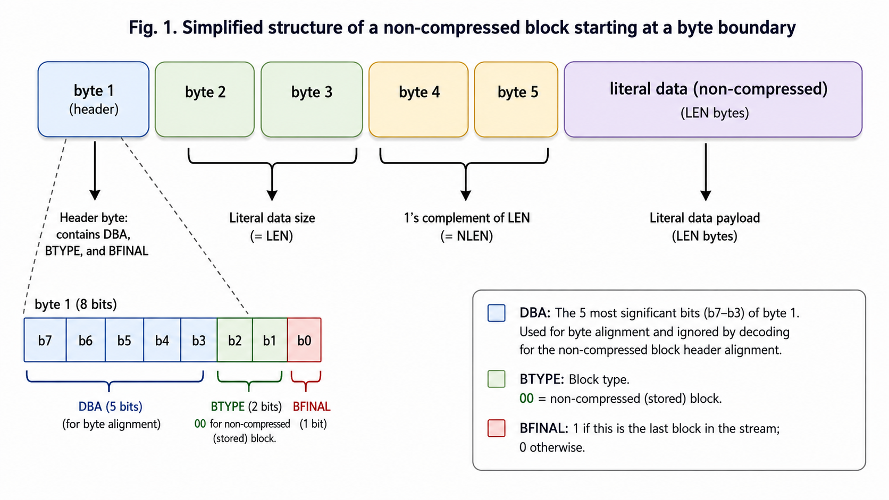
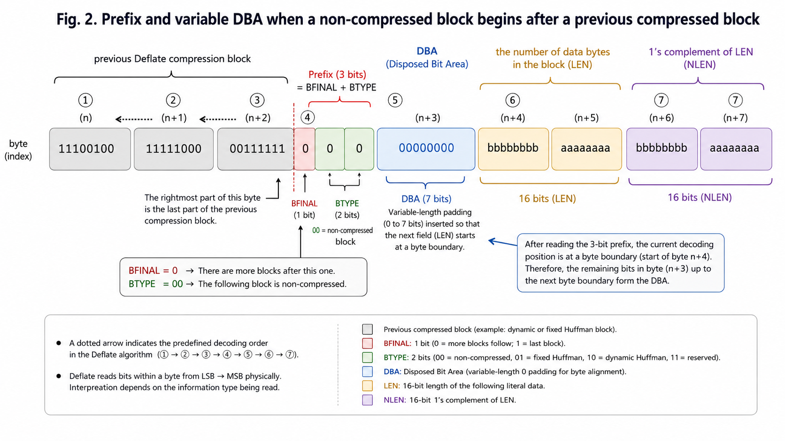
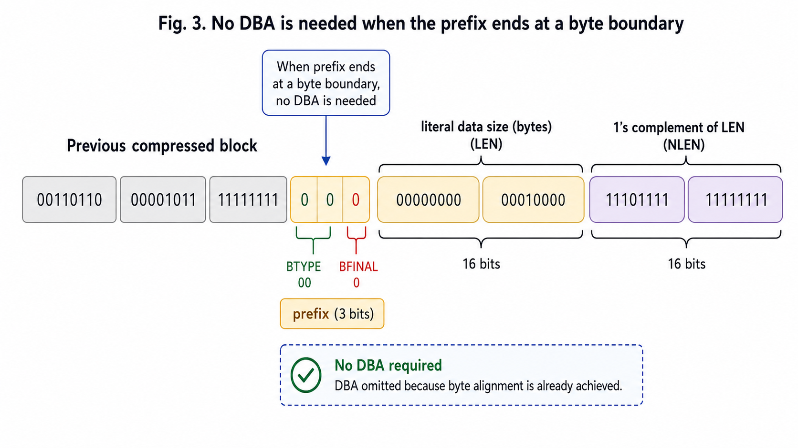

NPNCB 삽입
원본 데이터를 만들지 않는 zero-length 비압축 블록을 정상 블록 사이에 넣을 수 있습니다.
NPNCB insertion
Zero-length non-compressed blocks that emit no payload can be inserted between normal blocks.
Paper Brief · Deflate · ZIP Security · Steganography
비압축 블록의 byte align 과정에서 일반 디코더가 무시하는 비트 영역(DBA)을 이용해 데이터를 숨기고, 원본 데이터가 없는 비압축 블록(NPNCB)을 정상 압축 블록 사이에 삽입할 수 있음을 보여주는 연구를 소개합니다.
This page introduces a paper showing that data can be hidden in the DBA bits ignored by ordinary decoders during byte alignment, and that No-Payload Non-Compressed Blocks (NPNCBs) can be inserted between normal compressed blocks without changing the decompressed output.
Original Paper
Overview
논문은 Deflate 스트림 내부에 원본 데이터 없는 비압축 블록(NPNCB)을 삽입하더라도, 일반 압축 해제 결과는 정상으로 유지될 수 있다는 점에 주목합니다. 특히 byte align을 위해 존재하지만 일반 디코더가 무시하는 비트 영역을 본 연구에서는 DBA(Disposed Bit Area)라고 명명하고, 이 영역이 은닉 채널로 악용될 수 있음을 설명합니다.
The paper focuses on the fact that No-Payload Non-Compressed Blocks (NPNCBs) can be inserted into a Deflate stream without changing the ordinary decompression output. It also names the alignment bits ignored by typical decoders as the DBA (Disposed Bit Area) and explains how this region can become a covert storage channel.
원본 데이터를 만들지 않는 zero-length 비압축 블록을 정상 블록 사이에 넣을 수 있습니다.
Zero-length non-compressed blocks that emit no payload can be inserted between normal blocks.
byte align용 DBA는 보통 무시되므로, 분산된 비트 조각을 숨기는 공간이 될 수 있습니다.
Because DBA bits are usually ignored, they can become a place to hide distributed bit fragments.
압축 해제 결과와 CRC가 그대로이기 때문에 단순 결과 비교만으로는 이상을 놓칠 수 있습니다.
If the decompressed output and CRC stay unchanged, a result-only check may miss the anomaly.
비정상적인 NPNCB 빈도, 0이 아닌 DBA, 과도한 zero-length block 패턴을 함께 확인해야 합니다.
Detection should inspect abnormal NPNCB frequency, non-zero DBA bits, and suspicious zero-length block patterns.
Why It Matters
Deflate는 ZIP을 비롯한 여러 파일 형식과 프로토콜에서 사용되는 대표적인 압축 알고리즘입니다. 논문은 Deflate 표준이 허용하는 비압축 블록의 구조적 특성을 이용하면, 압축 해제 결과를 바꾸지 않으면서도 압축 데이터 내부에 별도의 데이터를 숨길 수 있음을 설명합니다.
이 취약점은 단순한 압축률 문제나 파일 헤더 오류가 아니라, “해제된 원본 데이터는 정상인데 압축 스트림 내부는 오염될 수 있다”는 검증 관점의 차이를 보여줍니다. 따라서 압축 파일 무결성 검사를 해제 결과에만 의존하는 도구는 은닉 데이터를 놓칠 수 있습니다.
Deflate is a widely used compression algorithm employed by ZIP and many other file formats and protocols. The paper explains that the structural properties of Deflate's non-compressed blocks can be used to hide additional data inside the compressed stream without changing the decompressed output.
This is not merely a compression-ratio issue or a file-header error. It highlights a validation gap: the decompressed data may remain normal while the compressed stream itself can still be contaminated. As a result, tools that rely only on decompressed-output integrity checks may miss hidden data.
Core Concepts
논문 이해에 필요한 세 가지 개념은 Deflate 블록 유형, DBA, NPNCB입니다.
The three key ideas needed to understand the paper are the Deflate block types, the DBA, and the NPNCB.
Deflate는 동적 허프만 블록, 고정 허프만 블록, 비압축 블록을 생성합니다. 비압축 블록은 압축 이득이 없을 때 원본 데이터를 그대로 담는 블록입니다.
Deflate produces dynamic Huffman blocks, fixed Huffman blocks, and non-compressed blocks. A non-compressed block stores the original data directly when compression gain is not expected.
비압축 블록의 LEN 필드를 byte boundary에서 시작시키기 위해 삽입되는 align 비트 영역입니다. 논문은 이 영역을 DBA라고 명명했습니다.
This is the alignment-bit region inserted so that the LEN field of a non-compressed block starts at a byte boundary. The paper names this region the DBA.
LEN이 0이어서 literal data가 없는 특수한 비압축 블록입니다. 원본 데이터를 만들지 않기 때문에 삽입되어도 해제 결과가 변하지 않을 수 있습니다.
This is a special non-compressed block with LEN=0 and no literal data. Because it does not generate output data, inserting it may leave the decompressed result unchanged.
Attack Idea at a High Level
아래 흐름은 방어 관점의 개념도입니다. 실제 악성 삽입 절차나 구현 코드는 제공하지 않습니다.
The diagram below is a conceptual illustration for defensive understanding. It does not provide weaponized insertion steps or implementation code.
Section 1.2
아래 도해는 논문의 1.2절 내용을 바탕으로, 비압축 블록(Non-compressed block)의 기본 구조와 DBA(Disposed Bit Area)의 의미를 시각적으로 설명합니다.
The diagrams below visually summarize Section 1.2 of the paper and explain the basic structure of a non-compressed block together with the meaning of the DBA (Disposed Bit Area).
핵심 포인트: 단순화된 그림에서는 prefix와 DBA를 고정 길이처럼 보이게 표현했지만, 실제 Deflate 알고리즘에서는 Non-compressed block 또는 NPNCB 앞에 Dynamic Huffman block 또는 Fixed Huffman block이 올 수 있습니다. 이 경우 다음 비압축 블록의 prefix(BFINAL 1비트 + BTYPE 2비트)는 직전 압축 블록의 마지막 비트 바로 다음 위치에서 시작하고, LEN/NLEN이 byte boundary에서 시작되도록 하기 위해 DBA가 가변적 비트 길이(0~7 bits)로 추가됩니다.
Key point: In simplified drawings, the prefix and DBA may look fixed, but in the real Deflate algorithm a non-compressed block or NPNCB may follow a Dynamic Huffman block or a Fixed Huffman block. In that case, the next non-compressed block's prefix (1-bit BFINAL + 2-bit BTYPE) starts immediately after the last bit of the previous compressed block, and the DBA is inserted with a variable length of 0 to 7 bits so that LEN/NLEN begins on a byte boundary.
00이면 non-compressed block, 01이면 fixed Huffman block, 10이면 dynamic Huffman block, 11은 reserved입니다.00, the block is non-compressed; 01 means fixed Huffman; 10 means dynamic Huffman; and 11 is reserved.


Paper Experiments
논문은 테스트용 인코더와 디코더를 사용하여 NPNCB 삽입이 일반 해제 결과에 영향을 주지 않는지, 그리고 DBA에 숨긴 데이터가 별도 디코더로 복원되는지 확인했습니다.
The paper uses test encoders and decoders to verify that NPNCB insertion does not affect ordinary decompression results and that data hidden in DBA fragments can be reconstructed by a separate decoder.
정상 압축 블록 사이에 NPNCB를 삽입해 블록 수가 증가했지만 일반 프로그램에서 정상 해제되었습니다.
The block count increased after NPNCB insertion, yet ordinary tools still decompressed the file normally.
엑셀 파일에서도 유사한 결과가 확인되었으며, 압축 해제 결과는 정상적으로 유지되었습니다.
A similar result was observed for XLSX data, while the decompressed output remained normal.
실험에서는 분할된 조각을 DBA에 숨기고 별도 디코더로 재조합하는 가능성을 보였습니다.
The experiment demonstrated that fragmented data hidden in DBA bits could be reassembled by a separate decoder.
Defensive Checklist
압축 해제 결과만 보지 말고 Deflate 스트림 자체의 구조적 이상 여부를 함께 점검해야 합니다.
Do not inspect only the decompressed output. The structure of the Deflate stream itself should also be checked.
비압축 블록의 align 영역이 0으로 채워져 있는지 확인하고, 0이 아닌 DBA를 경고 대상으로 삼습니다.
Check whether non-compressed block alignment bits are zero-filled and flag non-zero DBA values.
zero-length 비압축 블록이 비정상적으로 자주 등장하는지 점검합니다.
Inspect whether zero-length non-compressed blocks appear at an abnormal frequency.
신뢰 가능한 도구로 재압축하여 은닉 블록을 제거하는 전략을 고려할 수 있습니다.
Consider recompressing with a trusted tool to normalize the stream and eliminate hidden blocks.
해제 결과의 CRC뿐 아니라 압축 스트림 자체에 대한 해시·서명·정책 검사를 함께 적용합니다.
Apply hashes, signatures, or policy checks to the compressed stream itself, not only to the output CRC.
References
김정훈, ‘Deflate 압축 알고리즘에서 악성코드 주입 취약점 분석,’ 정보보호학회논문지, 32(5), 869-879, 2022.
DOI: 10.13089/JKIISC.2022.32.5.869